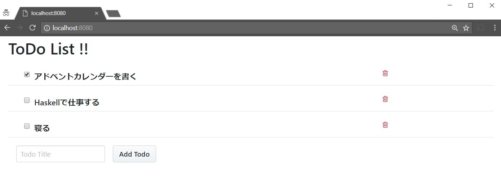

Haskell × Elm のサンプルアプリケーションを書いてみた
Haskell と Elm を使った Web アプリケーションのサンプルコードを書いてみたので，それについてイロイロとメモ書き．
最終的なコードはこちら．
いきさつ
現在とあるアルバイトで，Elixir × ELm での社内ツールを作ってる(もうクローズドの本番実装に移行したけど，テスト実装はオープンにしてる)．
バックエンド(Elixir/Phoenix)とフロント(Elm)で API による情報のやり取りをしているのだが，API の関数が Elixir と Elm で対応が取れているかどうかは，完全に手実装なので何の保証もない． 凄く悲しい． もしかしたら Haskell であれば Elm のコードを自動生成してくれるパッケージがあるのではないか，と思ったらあった(笑) なので，試しに Haslell × Elm で適当な Web アプリケーションを実装してみることにした．
ちなみに，Elixir で書いたツールを Haskell で置き換える野望は無いです(笑) バイトが終わった後に誰もメンテナンスが出来なくなっちゃうから(これは言い過ぎかもだけど，少なくとも学習コストが増す)．
仕組み
使ったのは以下のパッケージ
- krisajenkins/elm-export: Create Elm types and JSON decoders from Haskell source.
- mattjbray/servant-elm: Automatically derive Elm functions to query servant webservices
elm-export は Haskell で定義した型に対応する Elm の型を生成してくれてる． servant-elm は Haskell のサーバーサイドの Web フレームワークのひとつである servant の API の定義から Elm の API の関数を生成してくれる． そのため，今回はWebフレームワークには servant を用いる．
余談だけど，Haskell には意外とイロんなWebフレームワークがある． ボクはあんま詳しくないけど(servant しか使ったことない)．
あと注意点として，全ての Haskell の型が Elm の型に対応しているわけではない． しかし，elm-export はその点を型レベルで完全に保証しているわけではないようだ(以下 README より)．
There are some Haskell datatypes that cannot be represented in Elm. Obviously we will not support those. But there are some which are legal Haskell and legal Elm, but we do not yet generate.
作る
ここからが本題
何を作るか
考えるのが面倒だったので，以下の記事のサンプルアプリを Elm を用いて作ることにした．
ToDo リストを書いたり消したりって感じ． 最終的にはこんな感じの見た目になりました．

参考記事と違って ToDo の追加と削除もフロント側からできる． DBは使わず，ToDo リストは愚直にハッシュマップで保持してる(ここは参考記事でそうしてるからそうした)． なので，プログラムを落とせばデータは消える．
ToDo の型を書く
というか参考記事からの基本的にコピペですね．
{-# LANGUAGE DataKinds #-}
{-# LANGUAGE DeriveGeneric #-}
{-# LANGUAGE TypeOperators #-}
module Todo where
import Data.Aeson (FromJSON, ToJSON)
import Data.Proxy (Proxy (..))
import Elm (ElmType)
import GHC.Generics (Generic)
import Servant.API
import Web.Internal.FormUrlEncoded (FromForm)
data Todo = Todo
{ todoId :: Int
, title :: String
, done :: Bool
} deriving (Generic, Show)
instance FromJSON Todo
instance ToJSON Todo
instance FromForm Todo -- (1)
instance ElmType Todo -- (2)
type CRUD = "todos" :> Get '[JSON] [Todo]
:<|> "todos" :> ReqBody '[JSON, FormUrlEncoded] Todo :> Post '[JSON] Todo
:<|> "todos" :> Capture "id" Int :> ReqBody '[JSON, FormUrlEncoded] Todo :> Put '[JSON] ()
:<|> "todos" :> Capture "id" Int :> Delete '[JSON] ()
crud :: Proxy CRUD
crud = Proxy変更点は2つ． ひとつは FromForm 型クラスのインスタンスにしてる点((1)の行)． 参考記事では手作業で FromFormUrlEncoded 型クラスのインスタンスにしてるが，現在の http-api-data にはもうこの型クラスは無く，代わりに FromForm 型クラスを使うしかないようだ．
もうひとつは，ElmType 型クラスのインスタンスにしてる点((2)の行)． お察しの通り，この型クラスのインスタンスにした型を Elm の型にすることが出来るようになる．
どちらも Generics をサポートしてるので，簡単にインスタンス化できますね．
サーバーの main 関数を書く
こっちは完全にコピペです． 多少整形してあるのと，初期値 initTodoList を使ってるぐらい．
{-# LANGUAGE DataKinds #-}
{-# LANGUAGE OverloadedStrings #-}
{-# LANGUAGE TypeOperators #-}
module Main where
import Control.Arrow (second)
import Control.Concurrent.STM (TVar, atomically, modifyTVar, newTVar, readTVar, writeTVar)
import Control.Monad.IO.Class (liftIO)
import Data.Aeson
import Data.IntMap (IntMap)
import qualified Data.IntMap as IntMap
import Data.Proxy (Proxy (..))
import qualified Network.Wai.Handler.Warp as Warp
import Servant.API ((:<|>) (..), (:>), Get, Raw)
import Servant.EDE (HTML, loadTemplates)
import Servant.Server (Server, serve)
import Servant.Utils.StaticFiles (serveDirectoryFileServer)
import Todo (Todo (..))
import qualified Todo
main :: IO ()
main = do
db <- atomically $ newTVar (length initTodoList, IntMap.fromList initTodoList)
_ <- loadTemplates api [] "."
putStrLn "Listening on port 8080"
Warp.run 8080 $ serve api (server db)
type API = Get '[HTML "index.html"] Object
:<|> "static" :> Raw
:<|> Todo.CRUD
api :: Proxy API
api = Proxy
server :: TVar (Int, IntMap Todo) -> Server API
server db = index
:<|> serveDirectoryFileServer "static"
:<|> getTodos
:<|> postTodo
:<|> putTodoId
:<|> deleteTodoId
where
index = pure mempty
getTodos = liftIO $ IntMap.elems . snd <$> atomically (readTVar db)
postTodo todo = liftIO . atomically $ do
(maxId, m) <- readTVar db
let
newId = maxId + 1
newTodo = todo { todoId = newId }
writeTVar db (newId, IntMap.insert newId newTodo m)
pure newTodo
putTodoId tid todo =
liftIO . atomically . modifyTVar db . second $ IntMap.insert tid todo
deleteTodoId tid =
liftIO . atomically . modifyTVar db . second $ IntMap.delete tid
initTodoList :: [(Int, Todo)]
initTodoList =
[ (1, Todo 1 "アドベントカレンダーを書く" True)
, (2, Todo 2 "Haskellで仕事する" False)
, (3, Todo 3 "寝る" False)
]Elm コードジェネレーターの main 関数を書く
こっちは servant-elm のサンプルコードを参考にした．
{-# LANGUAGE OverloadedStrings #-}
module Main where
import Data.Proxy (Proxy (..))
import Elm
import Servant.Elm
import Shelly (run_, shelly)
import Todo (CRUD, Todo)
elmOpts :: ElmOptions
elmOpts =
defElmOptions
{ urlPrefix = Static "http://localhost:8080" }
spec :: Spec
spec = Spec ["Generated", "TodoAPI"]
(defElmImports
: toElmTypeSource (Proxy :: Proxy Todo)
: toElmDecoderSource (Proxy :: Proxy Todo)
: toElmEncoderSource (Proxy :: Proxy Todo)
: generateElmForAPIWith elmOpts (Proxy :: Proxy CRUD))
main :: IO ()
main = do
specsToDir [spec] "elm-src"
shelly $
run_ "elm-make" ["elm-src/Main.elm", "--output=static/main.js"]違うのは一番最後に shelly (shell コードを実行するためのパッケージ)を使って，Elm のビルドも行っている点．
できれば，stack build で Elm コードの生成とビルドもやりたかった． なので，この main 関数をテストとして Cabal ファイル(正確には package.json) に書いた．
test-suite generate
type: exitcode-stdio-1.0
main-is: Generate.hs
hs-source-dirs:
app
ghc-options: -Wall
build-depends:
aeson
, base >= 4.7 && < 5
, elm-export
, servant
, servant-elm
, servant-server
, haskell-and-elm
, shelly
default-language: Haskell2010こうすることで，stack build --test とすることで全部やってくれる．
ちなみに，生成されたコードはこんな感じ(長いので載せない)．
Elm コードを書く
あんまり本質的ではないので載せないけど，ここを見て．
ちなみに，Primer CSS を使って，少しだけ見た目を綺麗にしてる．
実行
一番最初に elm package install して Elm の依存パッケージをインストールする． 後は stack build --test とすると，Haskell のビルド，Elm コードの生成，Elm のビルドの順に実行してくれる． 後は，stack exec server とすることで，localhost:8080 にWebアプリがたつ．
おまけ
Elm 側で todo.todoId で Todo 型のフィールドにアクセスしなければいけないの悲しいよね． Elm は Haskell のレコード型と違って，フィールドの get 関数がグローバルのネームスペースを侵さないので，平気で id とかいうフィールド名を付けることが出来る．
type alias Todo =
{ id : Int
, title : String
, done : Bool
}Haskell でそんなことしたら〇されてしまう…
そこで 拡張可能レコード ですよ！！
なのでココからは頑張って Todo 型を拡張可能レコードに変更してみる！ (本音はココからが本題)
Todo 型
こうなる
各型クラスのインスタンス
拡張可能レコードは拡張可能レコード全体をひとつの型としてインスタンスを定義する．
FromJSON 型クラスと ToJSON 型クラスのインスタンス定義は fumieval/extensible リポジトリに例としてあるので，それをコピペした．
FromForm 型クラスは FromJSON 型クラスを参考に次のように定義した．
instance Forall (KeyValue KnownSymbol FromHttpApiData) xs => FromForm (Record xs) where
fromForm f = hgenerateFor (Proxy :: Proxy (KeyValue KnownSymbol FromHttpApiData))
$ \m -> let k = symbolVal (proxyAssocKey m) in Field <$> parseUnique (fromString k) f
instance FromHttpApiData a => FromHttpApiData (Identity a) where
parseUrlPiece = fmap Identity . parseUrlPiece拡張可能レコードと ElmType 型クラス
問題は ElmType 型クラス． ElmType 型クラスは次のようになっている。
class ElmType a where
toElmType :: a -> ElmDatatype
data ElmDatatype
= ElmDatatype Text ElmConstructor
| ElmPrimitive ElmPrimitive
deriving (Show, Eq)
data ElmConstructor
= NamedConstructor Text ElmValue
| RecordConstructor Text ElmValue
| MultipleConstructors [ElmConstructor]
deriving (Show, Eq)
data ElmValue
= ElmRef Text
| ElmEmpty
| ElmPrimitiveRef ElmPrimitive
| Values ElmValue ElmValue
| ElmField Text ElmValue
deriving (Show, Eq)ElmDatatype 型の ElmPrimitive 値コンストラクタは名前の通り，Int や String のような Elm のプリミティブ型を表現し，ElmDatatype 値コンストラクタはユーザー定義型を表現している． ElmDatatype 値コンストラクタの一引数目(Text)は型名である． つまり， 型名のが決まっていない型の定義ができない のである．
何を当たり前のことを…と思うかもしれないが，拡張可能レコードのインスタンスの定義のときには名前がまだ無い… この時点で定義できるのは，ElmValue 型までだ． なので，ElmValue 型に変換する型クラスを定義しよう．
ちなみに，レコード型は次のような ElmDatatype 型になる．
>> :set -XDeriveGeneric -XDeriveAnyClass
>> data Hoge = Hoge { xxx :: Int, yyy :: String } deriving (Show, Generic, ElmType)
>> toElmType (undefined :: Hoge)
ElmDatatype "Hoge" (RecordConstructor "Hoge" (Values (ElmField "xxx" (ElmPrimitiveRef EInt)) (ElmField "yyy" (ElmPrimitiveRef (EList (ElmPrimitive EChar))))))ToElmValue 型クラス
なんて雑な名前だろうか．
拡張可能レコードのインスタンスを，ToJSON 型クラスを参考に定義する．
instance Forall (KeyValue KnownSymbol ElmType) xs => ToElmValue (Record xs) where
toElmValue rec = hfoldMap getConst'
$ hzipWith (\(Comp Dict) v -> Const'
$ ElmField (fromString . symbolVal $ proxyAssocKey v) (elmTypeToElmValue . toElmType $ getField v))
(library :: Comp Dict (KeyValue KnownSymbol ElmType) :* xs) rec
instance ElmType a => ElmType (Identity a) where
toElmType (Identity a) = toElmType a
elmTypeToElmValue :: ElmDatatype -> ElmValue
elmTypeToElmValue (ElmDatatype name _) = ElmRef name
elmTypeToElmValue (ElmPrimitive prim) = ElmPrimitiveRef primそしてこれを用いて ElmType 型クラスの Todo 型のインスタンスを定義する．
{-# LANGUAGE TypeSynonymInstances #-}
instance ElmType Todo where
toElmType = toElmRecordType "Todo"
toElmRecordType :: ToElmValue a => Text -> a -> ElmDatatype
toElmRecordType name = ElmDatatype name . RecordConstructor name . toElmValueTypeSynonymInstances が嫌だったら，newtype でラップした型を定義すると良いでしょう．
ちなみに，newtype A = A (Record xs) かつ Record xs が ToElmValue 型クラスのインスタンスなら必ず ElmType 型クラスのインスタンスにできるはずなので，そのようなインスタンスを定義しようとしたが，うまくいかなかった． Haskell-JP で newtype であることを保証する型クラスは無いかとか聞いて，そのおかげで newtype であることと，対応する型を取り出すことはできたのだが，型名を取り出すのにうまくいかなかった． またそのうち挑戦します．
最後の罠
これで意気揚々と Elm コード生成プログラムを実行したら実行時エラーになってしまった(ビルドは通る)． 原因は以下のせい．
>> toElmType (undefined :: Todo)
ElmDatatype "Todo" (RecordConstructor "Todo" *** Exception: Prelude.undefined
CallStack (from HasCallStack):
error, called at libraries\base\GHC\Err.hs:79:14 in base:GHC.Err
undefined, called at <interactive>:15:12 in interactive:Ghci1要するに，undefined や Proxy のような中身の無い状態では拡張可能レコードのインスタンスメソッドを実行できないのだ． そりゃ冷静に考えてみればそうだと言う感じだ(値から正確な型を読み取っているのだから)．
なので，以下のような例の値を定義し．
生成プログラムのコードを次のように書き換える．
spec :: Spec
spec = Spec ["Generated", "TodoAPI"]
(defElmImports
: toElmTypeSource example -- here
: toElmDecoderSource example -- here
: toElmEncoderSource example -- here
: generateElmForAPIWith elmOpts (Proxy :: Proxy CRUD))これでうまく実行できるはず．
おしまい
拡張可能レコード化するのに3日ぐらい悩んでしまった． この手の問題は難しいですねやっぱり．
今後は積極的にこの組み合わせを使っていこうかしら．